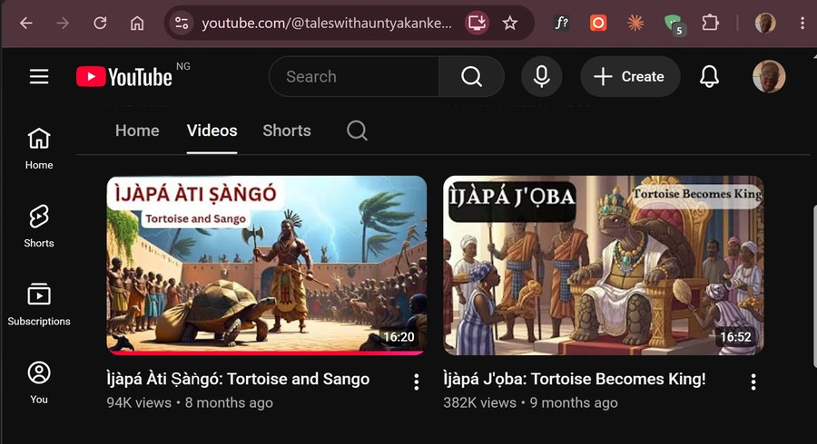

Pointed at a story.
AI-animated video production and the social platforms built to carry it — scripting, generation, editing, and an audience grown from zero.
Produced and edited 9 AI-animated video segments using Kling, Wan 2.1, and CapCut. Highest single video: 382,000 views. Grew the channel from 108 to 10,000+ subscribers in under 9 months. Transcribed and translated Yoruba audio to English.
382K viewsYoruba · English translation"Thank you very much for the video. The images are amazingly beautiful. Welldone!"
— Mrs Feyi, Aunty Akanke

Grew the platform from 20 to 491 followers in 5 months. Published 150+ original posts, ran the platform's first open poetry contest, managed all inbox correspondence for 100+ monthly inquiries, created Canva graphics, and sent weekly Mailchimp newsletters.

Editorial calendars, audience growth, community engagement, and full inbox handling. I grew Pidgin Poetry from 20 to 491 followers, published 150+ posts, and answered 100+ inquiries a month.
AI-animated video production with Kling, Wan 2.1, and CapCut: scripting, generation, editing, captions, and Yoruba-English transcription. My highest-performing piece reached 382,000 views.
TikTok and additional AI-animated clips are landing here next — this grid is built and waiting for them.